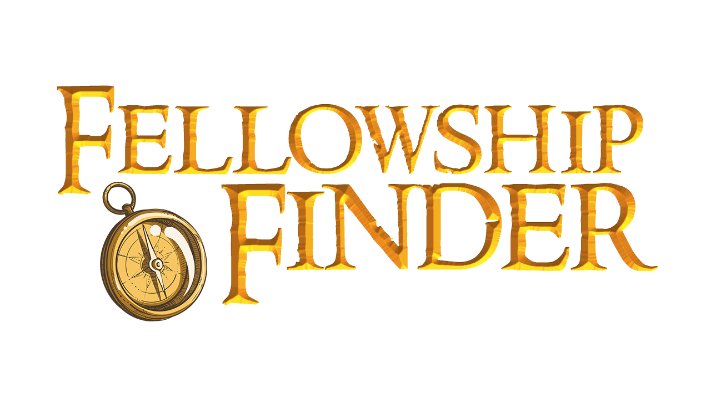

Well met, Traveler!
Are you seeking adventure but don't know where to start? On a quest to defeat the Dark Lord, but don't have a
party? Need to save a prince and/or princess? Then look no further, for you have stumbled upon just the sort
of magic you need to create the perfect party for your quest!
Simply fill out a short survey to discover the party member(s) of your dreams